地政学
トビリシは黒海、ロシア、トルコ、アルメニア、アゼルバイジャンを結ぶ南コーカサスの首都で、国家機関、外交団、広場の抗議、エネルギー回廊の議論が近接します。欧州志向と地域緊張が街路に映り、議論を動かします。
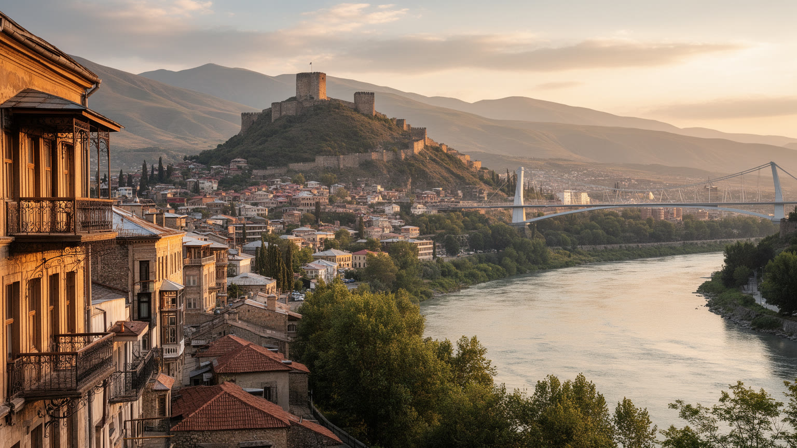
🇬🇪 ジョージア / 南コーカサス / World City Atlas
ムトゥクヴァリ川の谷に、ジョージアの国家機能、正教会、温泉街、ワイン文化、物流、抗議の広場、丘の住宅地が重なる南コーカサスの首都です。
都市の骨格
トビリシはムトゥクヴァリ川に沿って細長く伸び、丘の斜面、旧市街、官庁、ホテル、橋、地下鉄、住宅地が近接します。南コーカサスの政治と日常が、坂道と広場に圧縮された首都です。
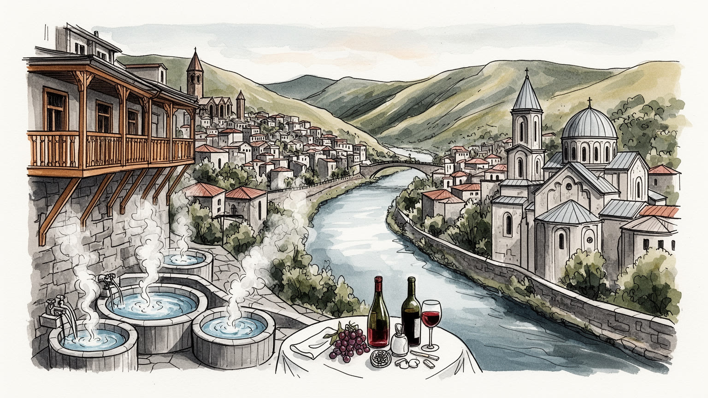
トビリシは黒海、ロシア、トルコ、アルメニア、アゼルバイジャンを結ぶ南コーカサスの首都で、国家機関、外交団、広場の抗議、エネルギー回廊の議論が近接します。欧州志向と地域緊張が街路に映り、議論を動かします。
雇用は行政、金融、観光、物流、不動産、建設、IT、教育、飲食、小売に支えられます。旧市街の客商売と郊外の通勤、若者の起業、送金、物価上昇が重なり、成長の利益は地区ごとに差を生みます。生活費上昇も焦点です。
ジョージア正教会、アルメニア教会、シナゴーグ、モスク、硫黄浴場、劇場、ワインの食卓が近くに並びます。祈りと宴、詩と合唱、多民族の記憶が旧市街の坂道に残り、首都文化の厚みを作っています。歌も礼も核です。
ナリカラ要塞、アバノトゥバニ、ルスタヴェリ大通り、カフェ、ワインバーは魅力ですが、住民には家賃、渋滞、坂道、公共交通、暖房費、政治不安が条件になります。観光と生活は同じ路地を使います。安心も争点です。
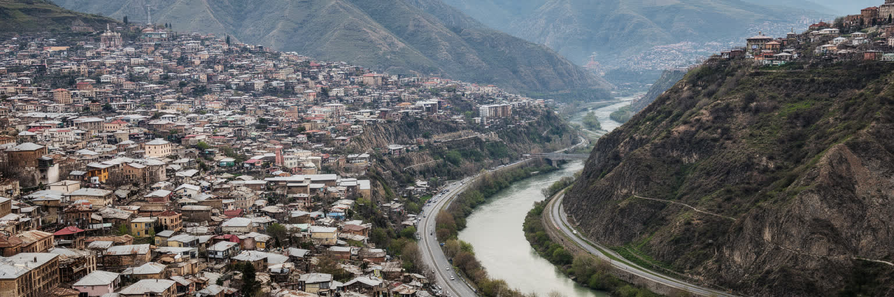
トビリシの形は、ムトゥクヴァリ川と周囲の丘を抜きに理解できません。市街地は川に沿って東西へ伸び、古い中心部は斜面、橋、崖、温泉の湯気、狭い路地が重なる場所にあります。平らな大都市ではないため、地区ごとの距離感は地図上の直線より坂道と橋に左右されます。右岸と左岸、旧市街とルスタヴェリ大通り、ヴァケやサブルタロの住宅地、空港方面の低地、郊外へ伸びる幹線道路は、それぞれ違う生活時間を持ちます。丘は眺望を与える一方、住宅の建設、道路、排水、土砂災害、冬の移動を難しくします。川沿いの開発はホテルやオフィスを呼び込み、古い浴場街や教会の景観と競合することもあります。都市を読む時は、要塞から見下ろす美しい風景だけでなく、水、斜面、交通、緑地、建設圧力がどの地区に負担を置くかを見る必要があります。トビリシの地形は、観光の背景であると同時に、日々の通勤と住宅価格を決める実用的な条件です。狭い谷に首都機能が集まるため、道路の混雑や空気の滞留も生じやすいです。便利な中心に近いほど地価は上がり、斜面の住宅地ほど公共交通や保育、医療への接続が課題になります。さらに水辺の緑地や橋の配置は、暑い季節の歩きやすさと避難経路にも関わります。短時間豪雨が増えれば、谷の排水と斜面管理はさらに重要になります。川と丘の読み方が、トビリシの社会を読む入口になります。
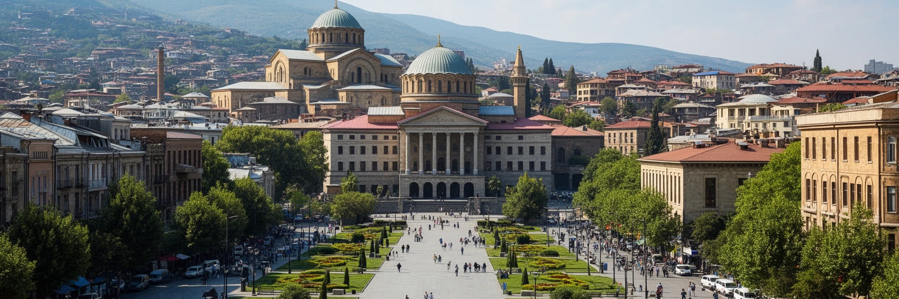
トビリシはジョージアの行政首都であり、議会、政府、裁判所、大使館、報道機関、大学、市民団体が集まります。政治は建物の中だけでなく、ルスタヴェリ大通り、自由広場、議会前の群衆、警備線、夜のデモとして都市空間に現れます。欧州連合への接近、ロシアとの緊張、占領地域をめぐる記憶、選挙、司法、メディアの自由は、首都の広場でたびたび可視化されます。地方から来る学生、活動家、企業人、行政職員、外国人記者は、同じ通りとカフェを使いながら国家の進路を語ります。首都であることは、仕事と権力を集める一方、政治的な不満も集中させます。デモが増えれば交通や商業は揺れ、警備が強まれば市民の日常移動にも影響します。トビリシの地政学は、黒海とカスピ海を結ぶ回廊の話だけではなく、国家の方向性を市民が街頭で問い続ける都市の作法にも表れます。制度への信頼、欧州志向、宗教的価値観、世代間の感覚差は、家族の会話や職場の沈黙にも入り込みます。首都を読むことは、権力者の動きだけでなく、誰が広場に立てるか、誰が声を上げにくいかを見ることでもあります。警察、裁判所、大学、教会、独立メディアの距離が近いことも、政治を生活圏へ引き寄せます。その近さが首都の緊張を日常へ強く持ち込みます。トビリシでは、政治の緊張と日常の社交が同じ大通りに重なり、都市の公共性を形作っています。
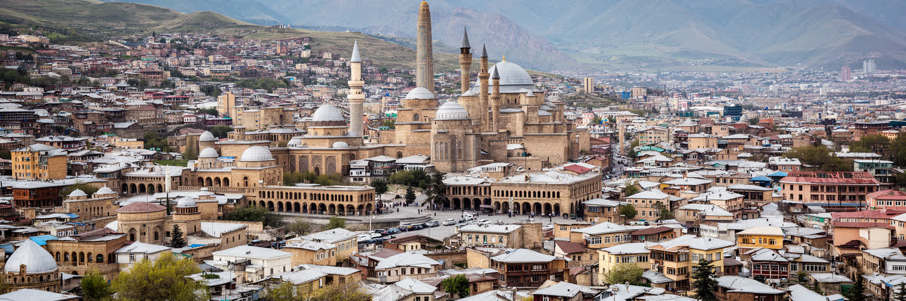
トビリシは一つの国家史だけで説明できない都市です。古代から交易路の結節点であり、ジョージア王国、ペルシア世界、オスマン帝国、ロシア帝国、ソ連、独立後の共和国が街の層を作ってきました。旧市街の木製バルコニー、硫黄浴場、教会、シナゴーグ、モスク、ロシア帝国期の大通り、ソ連期の住宅団地、現代のガラス建築は、支配と交流の記憶を同じ谷に置きます。十九世紀にはコーカサス総督府の拠点として行政と軍事が集まり、アルメニア人、ユダヤ人、アゼルバイジャン人、ロシア人、ペルシア商人、ヨーロッパ人が商いと文化を重ねました。ソ連期には工業、教育、映画、地下鉄、団地が整備され、独立後には内戦、停電、移民、民営化、観光化が都市を作り直しました。歴史を観光資源として眺めるだけでは、失われた共同体や政治的な痛みを見落とします。トビリシの魅力は、異なる帝国の痕跡が美しく混ざることだけでなく、それぞれの時代が住民の言語、家族名、信仰、建物の所有、街路名に残っている点にあります。交差路の都市とは、開かれている都市であると同時に、何度も外部の力に揺さぶられた都市でもあります。博物館や劇場は、その複雑な記憶を公的な物語へ編み直す場所でもあります。記憶の重なりは地区名や家庭の物語にも残ります。その複雑さを受け止める時、旧市街の路地は単なる景観ではなく、南コーカサスの歴史を読む地図になります。
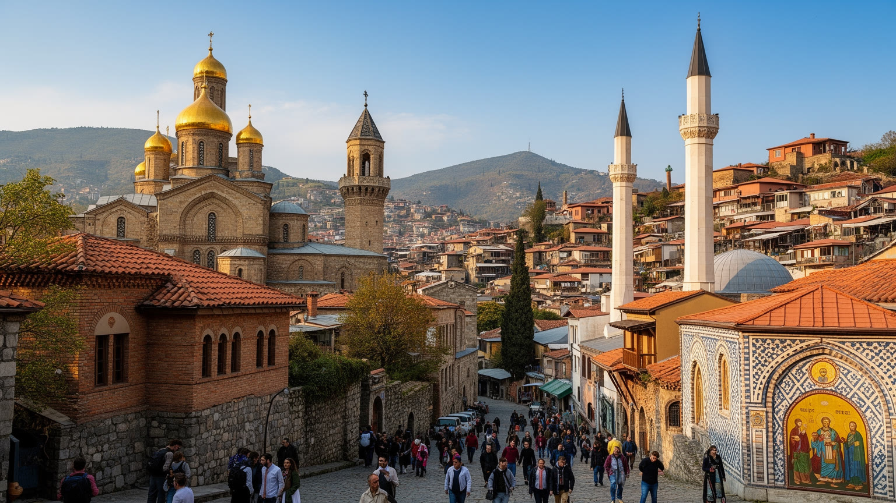
トビリシの宗教生活は、ジョージア正教会を中心にしながらも、単一の信仰だけで成り立ってきたわけではありません。シオニ大聖堂、サメバ大聖堂、メテヒ教会、アルメニア教会、シナゴーグ、モスク、聖者にまつわる小さな場が、旧市街と丘の上に近接しています。正教会は洗礼、結婚、葬儀、祝祭、国家意識に深く関わり、家族の暦と政治的価値観にも影響します。一方で、アルメニア人、ユダヤ人、アゼルバイジャン人、イランやロシアから来た人びとの記憶も都市の一部です。宗教施設が近くに並ぶ景観は寛容の象徴として語られますが、実際の共存は歴史的な移住、同化、対立、財産問題、少数派の不安を含みます。観光客にとっては美しい鐘楼や礼拝堂が見どころになりますが、住民にとって信仰は祖父母の墓、断食、名付け、食卓、近所づきあい、慈善の形で日常に入ります。トビリシの多民族性を読むには、民族衣装や料理の華やかさだけでなく、言語が残る学校、消えた共同体、修復された礼拝所、葬送の場を見る必要があります。宗教は都市の記憶を守る力である一方、国民性や政治に結びつくと排除の言葉にもなります。子どもの教育や婚礼の選択にも、信仰と家族の期待は静かに働きます。少数派の礼拝所が残ることは、都市の包容力を測る手がかりでもあります。だからこそ、信仰の厚みと多民族の緊張を同時に見ることが、トビリシの文化を理解する手がかりになります。
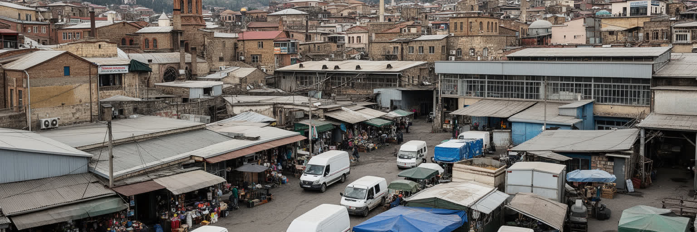
トビリシの経済は、ジョージア全体の行政、金融、教育、観光、通信、不動産、建設、物流、ITサービスを強く引き寄せます。銀行本店、政府機関、国際機関、大学、ホテル、レストラン、ワインバー、コワーキング施設が集まり、若い専門職や外国人居住者の消費も街を変えています。観光が伸びると旧市街の宿泊業、ガイド、飲食、清掃、タクシー、土産物店に仕事が生まれる一方、家賃と物価を押し上げます。ITや金融の成長は高収入の仕事を作りますが、言語力や教育へのアクセスがない人には届きにくいです。建設現場、配送、警備、家事労働、小売、厨房、清掃は都市を支えますが、賃金や安全の問題が残ります。地方から首都へ移る若者は、仕事、大学、医療を求めて来ますが、住宅費と雇用の不安に直面します。国外で働く家族からの送金も家計を支え、都市の消費を補っています。トビリシの成長を読むには、GDPやホテル数だけでなく、誰が中心部に住めるか、誰が長時間通勤するか、誰が季節的な観光収入に頼るかを見る必要があります。首都に仕事が集中するほど、地方との格差も広がります。公共部門の賃金、民間サービスの不安定さ、外国語を使う職場の偏りも、若者の選択を左右します。労働条件の改善は、都市の定着力にも直結します。都市の競争力は、新しいオフィスやカフェの数ではなく、働く人が安定して住み続け、技能を伸ばせる条件を持つかで測られます。
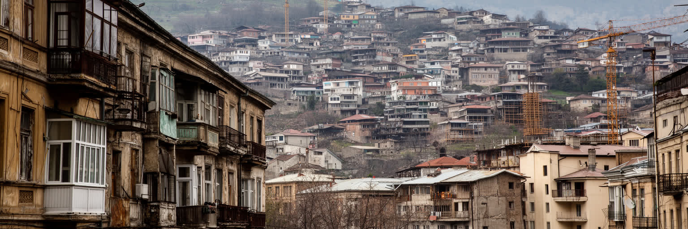
トビリシの暮らしは、旧市街の中庭住宅、ソ連期の集合住宅、斜面の戸建て、近年の高層マンション、郊外の新興地区が混在します。木製バルコニーや中庭は都市の象徴ですが、老朽化、耐震性、所有権、修復費の問題を抱えます。ソ連期の団地は広い人口を受け止めてきましたが、断熱、エレベーター、公共空間、駐車、管理の課題があります。中心部では観光と投資が宿泊施設や高級住宅を増やし、住民向けの家賃を押し上げます。郊外では新しいマンションが増える一方、学校、保育、緑地、歩道、公共交通が追いつかないこともあります。斜面の住宅地では眺望が価値になりますが、道路の狭さ、排水、地滑り、冬の移動が生活を制限します。家を持つことは家族の安全と世代間の資産に関わるため、不動産市場の変化は若者の結婚、独立、移住の判断にも響きます。トビリシを美しい旧市街としてだけ見ると、そこに住む人の修繕費、騒音、観光客の増加、日常の買い物を見落とします。暖房費や断熱の弱さは冬の家計を圧迫し、高齢者や子どもの健康にも関わります。住宅が投資対象になりすぎると、近所の助け合いや小さな商店の基盤も揺らぎます。再開発は危険な建物を更新し、公共空間を整える可能性を持ちますが、古い住民や小さな店を押し出す力にもなります。都市の成熟は、保存と更新、投資と居住、観光と近所づきあいをどこまで両立できるかに表れます。
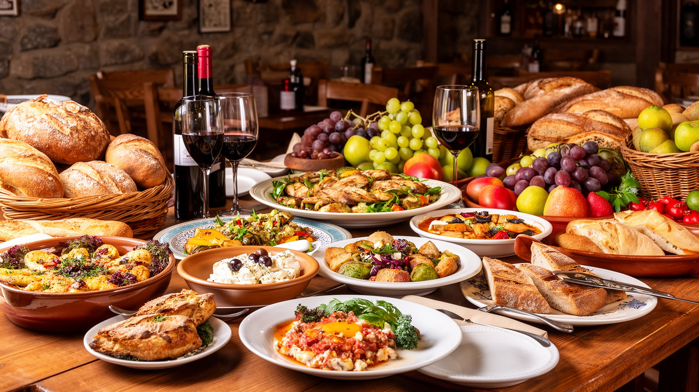
トビリシの食文化は、ジョージアの地方性と首都の混合性を同時に映します。ヒンカリ、ハチャプリ、ロビオ、プハリ、シャシリク、香草、胡桃のソース、パン、チーズ、クヴェヴリのワインは、観光客の楽しみである前に家族の宴と友人関係を結ぶ言葉です。スプラと呼ばれる宴では、タマダの乾杯、歌、祈り、冗談、記憶が重なり、食卓が社交と価値観の場になります。ポリフォニーの合唱や若者の外食文化も、首都の夜を特徴づけます。トビリシにはカヘティ、イメレティ、サメグレロ、山岳地域、アルメニア、アゼルバイジャン、ロシア、ペルシアの影響を受けた味が集まり、首都のレストランや市場で再編集されます。観光化はワインバー、料理教室、デザイン性の高い店を増やし、生産者や若い料理人に機会を与えます。一方で、中心部の店が高価になると、住民の日常食や小さな食堂は端へ押されます。市場の野菜、家庭で漬ける食材、路上のパン屋、郊外の家族食堂を見れば、食文化が観光商品だけではないことが分かります。ワインは国家ブランドであると同時に、地域の農家、輸出市場、気候、土地所有、若者の起業と結びつく産業でもあります。厨房で働く人、夜遅く片付ける人、農村から食材を運ぶ人の労働も、この豊かな食卓を支えます。トビリシの食を読むことは、味の豊かさだけでなく、宴が誰を招き入れ、誰を外に置くのか、労働と価格がどのように変わるのかを見ることでもあります。
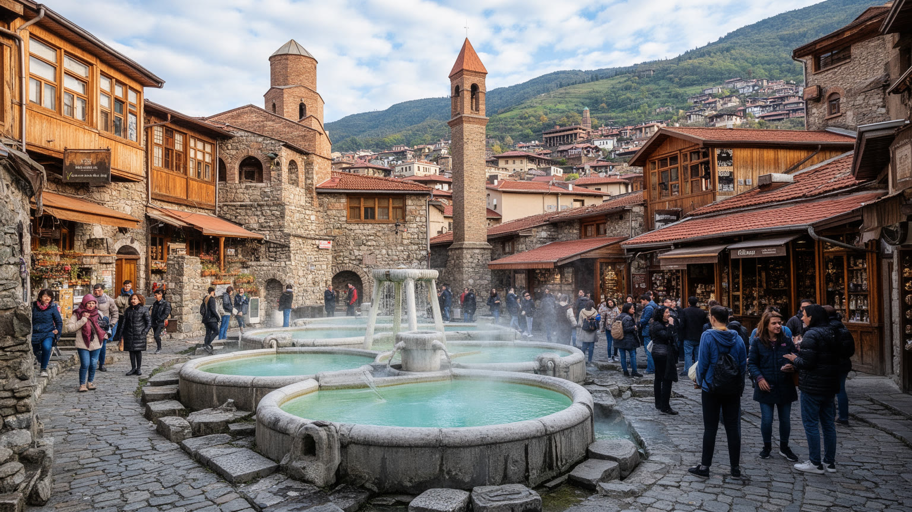
トビリシ観光の中心には、アバノトゥバニの硫黄浴場、ナリカラ要塞、メテヒ教会、シオニ大聖堂、平和橋、ルスタヴェリ大通り、国立博物館、劇場、カフェ、ワインバーがあります。坂道を歩けば、木製バルコニー、石畳、中庭、教会の鐘、浴場の丸屋根、現代建築が短い距離で現れます。観光の魅力は、この圧縮された景観にあります。しかし遺産は写真の背景だけではありません。老朽住宅に暮らす住民、浴場を維持する職人、教会を守る信徒、博物館の学芸員、ガイド、清掃員、店主がいて初めて都市の記憶は保たれます。観光客の増加は外貨と仕事をもたらしますが、短期賃貸、騒音、家賃上昇、過剰な土産物化を招くこともあります。保存が厳しすぎれば住宅改善は遅れ、開発が速すぎれば景観と共同体が壊れます。トビリシの遺産を読む時は、古さを美化するだけでなく、誰が修復費を払い、誰が移転し、誰が観光収入を得るのかを問う必要があります。旧市街の価値は、建物が古いことだけではなく、祈り、入浴、食事、商い、近所の会話が続くことにあります。夜の照明や橋のデザインも、都市の印象を作る一方で、歴史地区の静けさを変えます。修復の質は、観光の信頼にも住民の安全にも関わります。観光都市としての成功は、訪れる人の満足と住む人の尊厳を両立できるかで決まります。トビリシの美しさは、生活が残る遺産として守られてこそ強さを持ちます。
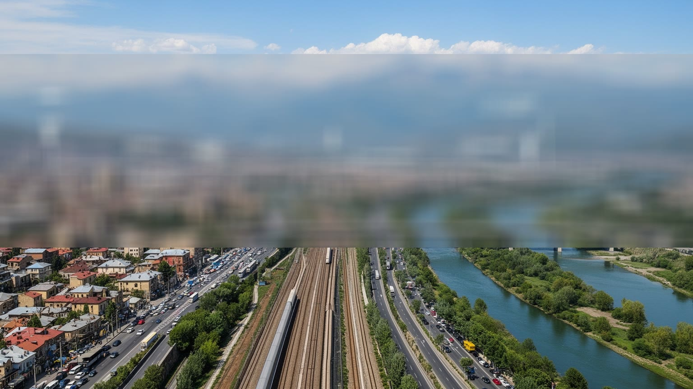
トビリシは内陸の首都ですが、黒海とカスピ海を結ぶ交通回廊の中で重要な位置を占めます。鉄道、幹線道路、空港、物流施設は、ジョージア国内だけでなく、アゼルバイジャン、アルメニア、トルコ、黒海港湾、中央アジア方面との接続を支えます。エネルギー回廊や貨物輸送の議論は国家戦略の言葉で語られますが、市内では渋滞、排気、バスの混雑、地下鉄の老朽化、歩道の不足、坂道の移動として経験されます。中心部の観光地へ向かう車、郊外からの通勤、建設現場のトラック、空港利用者、配達員が同じ道路を使うため、谷の都市はすぐに詰まりやすいです。地下鉄とバスは生活の基盤ですが、駅から遠い斜面の地区や新興住宅地では乗り換えと徒歩が重い負担になります。交通は単なる便利さではなく、誰が仕事や学校、病院、広場へ届くかを決める社会的な条件です。国際物流の節点であることを誇るなら、市民の日常移動も安全で読みやすい必要があります。歩行者、子ども、高齢者、車を持たない人、観光客にとって使いやすい街路を作れるかが、都市の包容力を左右します。さらに交通政策は大気汚染、温室効果ガス、公共空間の質ともつながります。道路の使い方を変えることは、中心部の観光管理と住宅地の健康を同時に変えます。トビリシの交通を読むことは、大きな回廊と小さな横断歩道を同じ政策として見ることでもあります。
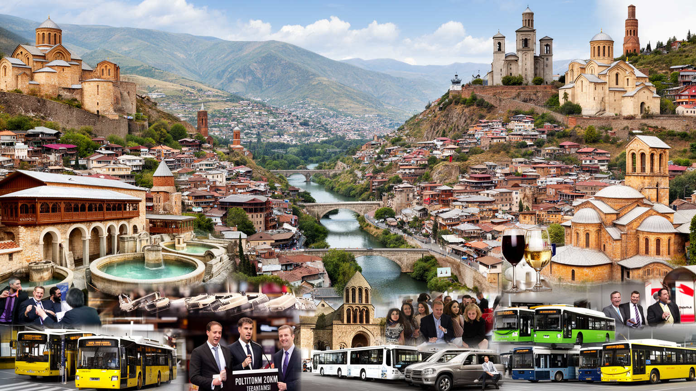
トビリシを理解するには、旧市街の美しさと地政学の重さを切り離さずに見る必要があります。川の谷、丘の住宅地、正教会、多民族の記憶、ワインの食卓、国家機関、抗議の広場、物流回廊、観光投資、若者のIT産業は、同じ都市の違う顔です。外からは魅力的な旅先として見えやすいが、住民にとっては家賃、仕事、交通、政治不安、公共サービス、家族の将来を調整する生活の場所です。トビリシの重要性は、経済規模だけでなく、南コーカサスで国家の進路、文化の記憶、欧州志向、隣国との緊張がどのように都市空間へ現れるかを示す点にあります。要塞から眺める景観、議会前の群衆、浴場の湯気、ラグビーやサッカーの応援、地下鉄の混雑、郊外の建設現場、市場の香草は、ばらばらの観光要素ではなく、首都が抱える複数の時間を示しています。生活費の上昇、移住者の増加、世代間の価値観の差は、都市の開放性を試しています。都市の強さは、その差を公共の議論として扱えるかに表れます。弱い立場の人が残れるかも重要です。トビリシは大国の首都ではありませんが、黒海、ロシア、中東、中央アジア、ヨーロッパを意識せずには動けない都市です。その緊張の中で、住民は食卓、歌、祈り、抗議、商いを通じて自分たちの街を作り直しています。世界都市として読む価値は、巨大さではなく、谷の狭い空間に地域政治と生活文化が濃く重なるところにあります。